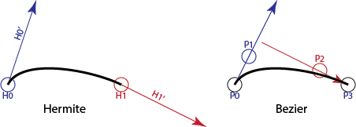

A warning: Bezier is properly spelled with an accent over the first e. Getting that right on the web is tough.
Hermite cubics are convenient because they make it easy to build C(1) curves from pieces. We just need to match the end of one segment to the beginning of the next.
But, if you wanted to make a user interface for a Hermite cubic, you'd have a problem: how do you specify the derivative? The end points are points in the space of the curve, but the derivatives are something different.
A simple solution might be to do something like what we did to draw the tangent vectors in Box 2 of Page 1: we can create a new point that is at the end of the tangent vector if the tangent vector starts at the curve end point. There's another issue that the tangent vector is probably too long to be convenient, so we need to scale it down. When I drew the tangents on page 1, I scaled them by 40%, but that was arbitrary. And we can point the end tangent backwards so we have symmetry. In other words, we can map the four "controls" of a Hermite cubic () to four "control points" as:
Or, as a picture...

These curve pieces are cubic Bezier segments.
Note that the picture in the book (Figure 15.10) is wrong: since the tangent arrows are 3 times the difference in the control points, they should be longer, not shorter.
The connection between cubic Bezier segments and Hermite segments makes them easy to convert. If we have a Hermite segment (or can get one, from some other cubic form), we can easily convert to Bezier form.
Cubic Bezier curves are a specific case: Bezier curves can be created for any degree. A first degree (two points) Bezier curve is a line segment. We can have degree 2 (quadratic, 3 points), degree 3 (cubic, 4 points), or any higher degree Bezier curves.
Bezier curves have many useful properties. These are described in the book, but they are so important, I will repeat them here:
The HTML Canvas API provides both quadratic and cubic Bezier curves. It allows you to use these curves as pieces of longer paths.
One thing that is slightly surprising about Bezier segments in Canvas is that they take one fewer control point as an argument as the curve needs. The first control point is always the most recent pen position. So, if you want to give the four points of a Bezier segment, you need to do a moveTo first to get that first point:
context.moveTo(ax,by); context.bezierCurveTo(bx,by,cx,cy,dx,dy);
This is actually convenient because we often want to connect segments together.
In Computer Graphics, we typically create complicated shapes by connecting low-degree pieces. Most often, we use cubics.
With Bezier curves, we can control the continuity when we put two segments (each a Bezier curve) together.
Bezier curves are discussed in the book in Chapter 15.6.1. Here, we focused on the specific kinds of Bezier curves we see in Canvas. We see the connection with Hermite (and therefore Cardinal) cubics and how they are drawn in Canvas. The list of properties is in the book, but they are important.
On the next page we will look at a geometric construction for Bezier curves that will help provide intuitions for their properties.